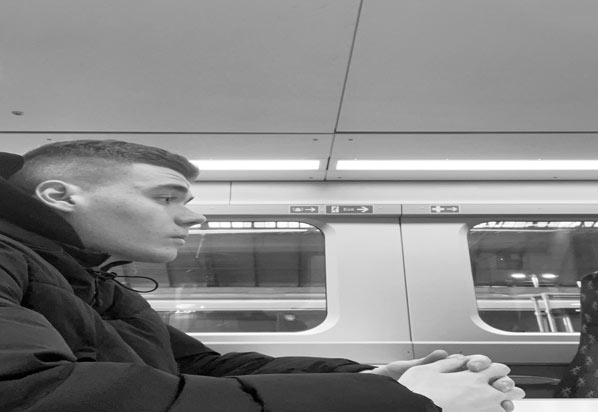
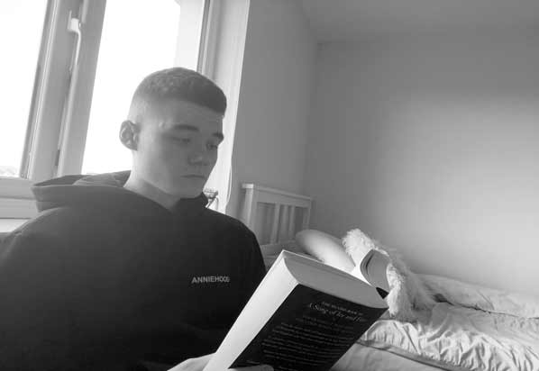
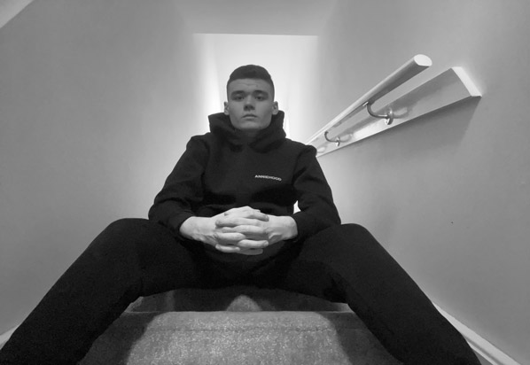

About the Designer
  Max Kennedy
Hello there, My name is Max Kennedy and I am currently studying design for digital media at city of glasgow college.
in the future I would like to persue a career as a graphic designer, which is why i am currently enrolled in city of glasgow college. I am currently on my second semester of design for digital media level 6 and I am hoping to earn a space in the Design for digital media level 8 coarse.
- some of my hobbies include
- Playing ttrpgs
- Playing video games
- Reading novels
- Writing short stories
I hope you enjoy the work I have displayed on my website, and if you are a potential imployer I hope you'll contact me via my information displayed on the contact me page